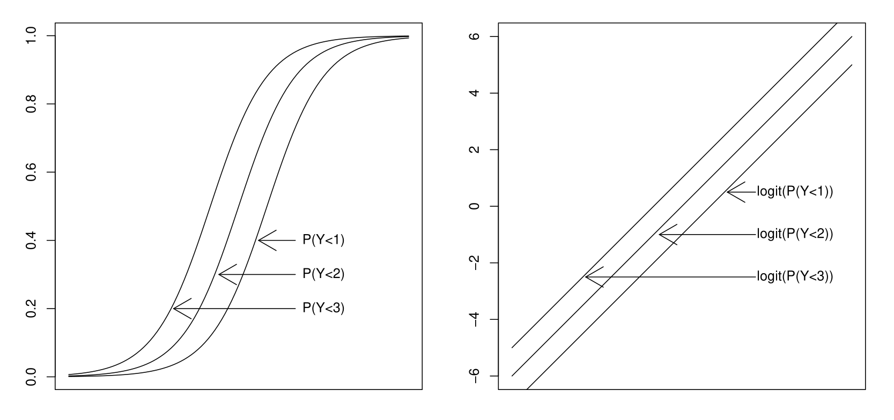
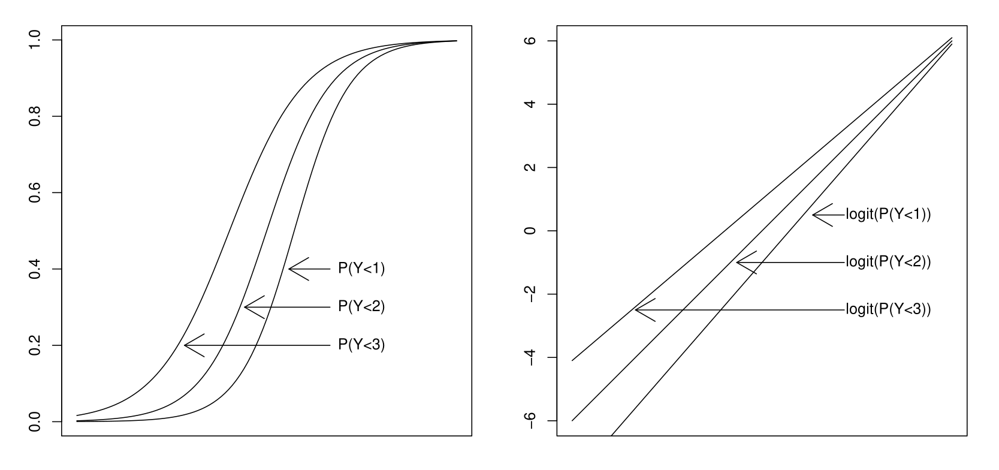
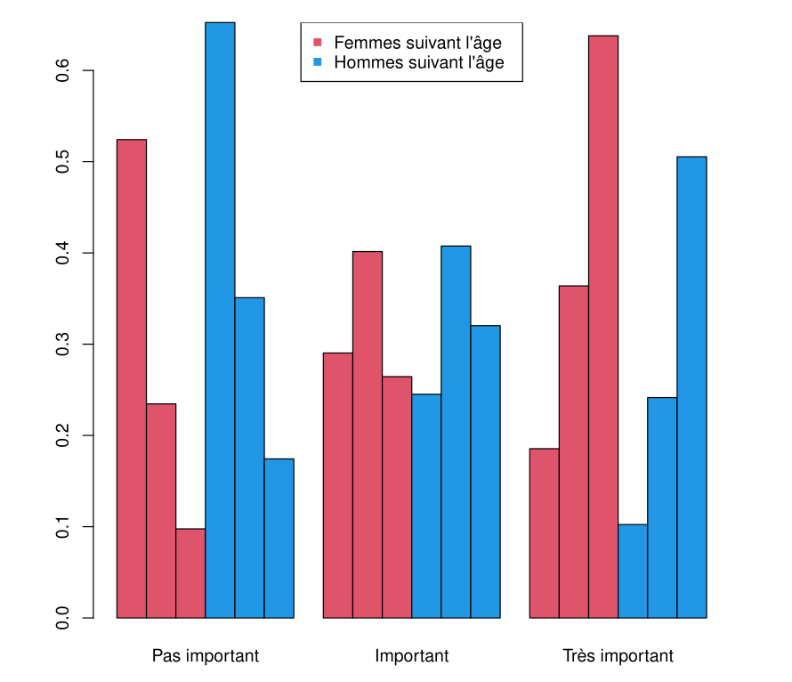

\(\newcommand{\VS}{\quad \mathrm{VS} \quad}\) \(\newcommand{\and}{\quad \mathrm{and} \quad}\) \(\newcommand{\E}{\mathbb E}\) \(\newcommand{\P}{\mathbb P}\) \(\newcommand{\Var}{\mathbb V}\) \(\newcommand{\Cov}{\mathrm{Cov}}\) \(\newcommand{\1}{\mathbf 1}\)
For each individual \(i\), \(Y_i\) takes now \(K\) values
Two class of models:
In the binary case (\(K = 2\)), the logistic model assumes that there exists \(\beta \in \mathbb{R}^p\) such that:
\[\frac{p^{(1)}(x)}{p^{(0)}(x)} = e^{x^T \beta}\]
(because \(\frac{p^{(1)}(x)}{p^{(0)}(x)} = \frac{p^{(1)}(x)}{1-p^{(1)}(x)}\))
Category “\(0\)” can be seen as a reference category.
In the general case (\(K\) arbitrary), the nominal logistic model (or multinomial, or reference category model) similarly assumes for \(k \in \{1, \ldots, K-1\}\):
\(\frac{p^{(k)}(x)}{p^{(0)}(x)} = e^{x^T \beta^{(k)}}\)
where \(\beta^{(k)} \in \mathbb{R}^p\) is the parameter associated with category \(k\).
Category “\(0\)” is the reference category, whose probability is deduced from the others.
There are in total \((K-1) \times p\) unknown parameters.
We deduce that in this model, for all \(k \in \{1, \ldots, K-1\}\),
\(p^{(k)}(x) = p_\beta^{(k)}(x) = \frac{e^{x^T \beta^{(k)}}}{1 + \sum_{r=1}^{K-1} e^{x^T \beta^{(r)}}}\)
\(p^{(0)}(x) = p_\beta^{(0)}(x) = \frac{1}{1 + \sum_{r=1}^{K-1} e^{x^T \beta^{(r)}}}\)
(which is consistent with the previous formula by taking \(\beta^{(0)} = 0\))
We note that each \(p_\beta^{(k)}(x)\) depends on all parameters \(\beta = (\beta^{(1)}, \ldots, \beta^{(K-1)})\) and not only on \(\beta^{(k)}\)
Hence the notation \(p_\beta^{(k)}(x)\) with the index \(\beta\).
\(\beta^{(k)} \in \mathbb R^p\) depends on the reference category.
We call “odds” of event \(Y = k\), the ratio \(p_\beta^{(k)}(x)/p_\beta^{(0)}(x)\).
The OR of \(Y = k\) for two characteristics \(x_1\) and \(x_2\) is therefore
\[OR^{(k)}(x_1, x_2) = \frac{p_\beta^{(k)}(x_1)/p_\beta^{(0)}(x_1)}{p_\beta^{(k)}(x_2)/p_\beta^{(0)}(x_2)} = e^{(x_1 - x_2)^T \beta^{(k)}}\]
\(OR^{(k)}(x_1, x_2)\) depends only on \(\beta^{(k)}\), and even, only on \(\beta_j^{(k)}\) if \(x_1\) and \(x_2\) differ only by regressor \(X^{(j)}\).
While probabilities \(p_\beta^{(k)}(x)\) depend on other \(\beta^{(k')}\), \(k'\neq k\)!!
We find the same interpretation of OR as in logistic regression, except that here the odds is relative to the reference category.
It is therefore important to judiciously choose the reference category for interpretations.
That said, for two categories \(k \neq l\), the probability ratio
\[\frac{p_\beta^{(k)}(x)}{p_\beta^{(l)}(x)} = e^{x^T(\beta^{(k)} - \beta^{(l)})}\]
does not depend on the chosen reference category.
Similarly, the value of probabilities \(p_\beta^{(k)}(x)\) and their estimation do not depend on the chosen reference category either.
If the reference category is \(Y = j\), denoting the associated parameters \(\gamma^{(k)}\), \(k \neq j\), and \(\gamma^{(j)} = 0\),
we have the relation \(\gamma^{(k)} = \beta^{(k)} - \beta^{(j)}\).
For each individual \(i\), \(Y_i|X_i = x\) follows a multinomial distribution \(\mathrm{Mult}(1,(p_\beta^{(0)}(x), \ldots, p_\beta^{(K-1)}(x)))\).
The likelihood of a sample \((Y_1|X_1 = x_1), \ldots, (Y_n|X_n = x_n)\) is written:
\[\prod_{i=1}^n \prod_{k=0}^{K-1} \left(p_\beta^{(k)}(x_i)\right)^{\mathbf{1}\{Y_i = k\}}\]
Therefore the log-likelihood
\[L = \sum_{i=1}^n \sum_{k=0}^{K-1} \mathbf{1}_{y_i = k} \ln\left(p_\beta^{(k)}(x_i)\right)\]
In the case of the nominal logistic model, we deduce
\[L = \sum_{i=1}^n \left[\sum_{k=1}^{K-1} x_i^T \beta^{(k)} \mathbf{1}_{y_i = k} - \ln\left(1 + \sum_{k=1}^{K-1} e^{x_i^T \beta^{(k)}}\right)\right]\]
By setting the gradient of \(L\) to zero, we obtain that \(\hat{\beta} = (\hat{\beta}^{(1)}, \ldots, \hat{\beta}^{(K-1)})\) must verify, for all \(k \in \{1, \ldots, K-1\}\):
\[\sum_{i=1}^n x_i \mathbf{1}_{y_i = k} = \sum_{i=1}^n x_i p_{\hat{\beta}}^{(k)}(x_i)\]
\(K-1\) equations, each with \(p\) parameters, i.e. \((K-1) \times p\) equations.
We solve it numerically to find \(\hat{\beta}\) of size \((K-1) \times p\).
As in logistic regression:
We can show that \(L\) is strictly concave as soon as \(\text{rank}(X) = p\).
This ensures the uniqueness of the MLE (if it exists).
Existence is ensured if no category is separated from the others by a hyperplane.
Under regularity assumptions similar to the case of logistic regression, we have
\[J_n(\beta)^{1/2}(\hat{\beta} - \beta) \xrightarrow{L} N(0, I_{(K-1) \times p})\]
where \(J_n(\beta)\) is the Fisher information matrix and \(I_{(K-1) \times p}\) is the identity matrix of size \((K-1) \times p\).
\(J_n(\beta)\), not detailed here, is a matrix of \((K-1) \times (K-1)\) blocks, each having a similar form to the Fisher information matrix of logistic regression.
The inference tools are based on the asymptotic distribution of \(\hat{\beta}\) and are similar to those of logistic regression:
The significance of each coefficient can be tested by an (asymptotic) Wald test.
Confidence intervals, for coefficients and OR, are deduced analogously.
Deviance is defined similarly: \(D = 2(L_{\text{sat}} - L_{\text{mod}})\).
As we do for logistic regression:
\(\text{AIC} = D + 2p(K-1) \and \text{BIC} = D + \ln(n)p(K-1)\)
Preference for an equipped car (with air conditioning and power steering), according to age group and gender.
| Gender | Age Category | Not Important | Important | Very Important |
|---|---|---|---|---|
| Female | 18-23 | 26 | 12 | 7 |
| 24-40 | 9 | 21 | 15 | |
| >40 | 5 | 14 | 41 | |
| Male | 18-23 | 40 | 17 | 8 |
| 24-40 | 17 | 15 | 12 | |
| >40 | 8 | 15 | 18 |
We want to model the variable \(Y =\) “importance” (3 categories)
The regressors are gender (2 classes) and age (3 classes).
These are grouped observations: each category gender/age is observed for several individuals
Under R, we can use the vglm function from the VGAM library:
| Coefficient | Estimate | Std. Error | z value | Pr(> | z |
|---|---|---|---|---|---|
| (Intercept):1 | -0.5908 | 0.2840 | -2.080 | 0.037484 | * |
| (Intercept):2 | -1.0391 | 0.3305 | -3.144 | 0.001667 | ** |
| age2:1 | 1.1283 | 0.3416 | 3.302 | 0.000958 | *** |
| age2:2 | 1.4781 | 0.4009 | 3.687 | 0.000227 | *** |
| age3:1 | 1.5877 | 0.4029 | 3.941 | 8.12e-05 | *** |
| age3:2 | 2.9168 | 0.4229 | 6.897 | 5.32e-12 | *** |
| sexeM:1 | -0.3881 | 0.3005 | -1.292 | 0.196510 | |
| sexeM:2 | -0.8130 | 0.3210 | -2.532 | 0.011326 | * |
Names of linear predictors: log(mu[,2]/mu[,1]), log(mu[,3]/mu[,1])
| Coefficient | Estimate | Std. Error | z value | Pr(> | z |
|---|---|---|---|---|---|
| (Intercept):1 | -0.5908 | 0.2840 | -2.080 | 0.037484 | * |
| (Intercept):2 | -1.0391 | 0.3305 | -3.144 | 0.001667 | ** |
| age2:1 | 1.1283 | 0.3416 | 3.302 | 0.000958 | *** |
| age2:2 | 1.4781 | 0.4009 | 3.687 | 0.000227 | *** |
| age3:1 | 1.5877 | 0.4029 | 3.941 | 8.12e-05 | *** |
| age3:2 | 2.9168 | 0.4229 | 6.897 | 5.32e-12 | *** |
| sexeM:1 | -0.3881 | 0.3005 | -1.292 | 0.196510 | |
| sexeM:2 | -0.8130 | 0.3210 | -2.532 | 0.011326 | * |
For example, for a woman aged 18 to 23 years (Age cat. and Gender Cat. are zero):
\(\frac{P(Y = \text{"Important"}|\text{Woman 18-23})}{P(Y = \text{"Not important"}|\text{Woman 18-23})} = \exp(-0.59) \approx 0.55\)
For a man of the same age group, this ratio equals \(\exp(-0.59 - 0.3881) \approx 0.38\)
The OR between a man and a woman for the “Very important” preference relative to “Not important” equals \(\exp(-0.813) = 0.44\)
This odds is therefore more than double among women…
If the categories of \(Y\) follow a natural order:
We can obviously ignore it and use the previous nominal model: it is very general but has many parameters.
But we can take advantage of this structure to simplify the model (fewer parameters, easier interpretation).
In consistency with the logistic model, we have focused on the “odds”
\[\frac{P(Y = k|X = x)}{P(Y = 0|X = x)} = \frac{p^{(k)}(x)}{p^{(0)}(x)}\]
The OR quantifies how much the “odds” of \(P(Y = k)\) is modified between \(x_1\) and \(x_2\), relative to the reference category \(Y = 0\).
In the ordinal case, we will model “odds” that are easier to interpret.
Which Odds to Model When Categories Are Ordered?
Odds for adjacent categories model:
\(Odds(x)=\frac{P(Y = k|X = x)}{P(Y = k-1|X = x)}\)
Odds for continuous ratio logistic model:
\(Odds(x)=\frac{P(Y = k|X = x)}{P(Y \leq k-1|X = x)}\)
Odds for proportional odds model (most used):
\(Odds(x)=\frac{P(Y \leq k|X = x)}{P(Y > k|X = x)}\)
The idea is to construct logistic models for the binary variables \(\mathbf{1}_{Y \leq k}\), for all \(k \in \{0, \ldots, K-2\}\).
This gives in full generality the cumulative model
\[\begin{aligned} \text{logit}(\P(Y \leq k|X = x)) &= \ln\left(\frac{\P(Y \leq k|X = x)}{\P(Y > k|X = x)}\right) \\ &= x^T \beta^{(k)}\end{aligned}\]
\(p(K-1)\) parameters but is different from the nominal model.
Assumption: the effect of regressors (except the constant) is constant regardless of the categories:
\[\text{logit}(\P(Y \leq k|X = x)) = \beta_0^{(k)} + \beta^T X^*\]
where \(X^* \in \mathbb{R}^{p-1}\) denotes the vector of regressors other than the constant.
\((K-1) + (p-1)\) parameters (this is much less).
Since for any \(k\),
\(\text{logit}(P(Y \leq k|X = x)) \leq \text{logit}(P(Y \leq k+1|X = x))\)
the proportional odds model must verify, for all \(x \in \mathbb R^p\):
\(\beta_0^{(0)} \leq \dots \leq \beta_0^{(K-2)}\)
This constraint is imposed during estimation.
Suppose that the classes \(Y = k\) come from the discretization of a continuous latent variable \(Z\):
for \(\alpha_{-1} = -\infty\), \(\alpha_0 < \cdots < \alpha_{K-1}\) and \(k \in \{0, \ldots, K-1\}\),
\[\1\{Y=k\} = \1\{\alpha_{k-1} \leq Z < \alpha_k\}\]
Example: \(Z\) is a grade, and \(Y\) the distinction level
\(\1\{Y=k\} = \1\{\alpha_{k-1} \leq Z < \alpha_k\}\)
Suppose there exists a linear relationship between \(Z\) and the regressors \(X\):
\[Z = \beta^T X + \varepsilon\]
where \(\varepsilon\) follows a distribution with cdf \(F\). Then
\[P(Y \leq k) = F(\alpha_k - \beta^T X)\]
\[P(Y \leq k) = F(\alpha_k - \beta^T X)\]
The dependence on \(X\) does not depend on \(k\).
If \(F = \text{logit}^{-1}\), we obtain the proportional odds model.
Other choices of \(F\) are possible (probit,…) but the OR become less interpretable.
Why “Proportional Odds”?
The proportional odds model assumes that for \(k \in \{0, \ldots, K-2\}\),
\[\frac{P(Y \leq k|X = x)}{P(Y > k|X = x)} = e^{\beta_0^{(k)} + \beta^T X^*}\]
This is the odds of \(Y \leq k\) given \(X=x\).
The odds-ratio of \(Y \leq k\) between two individuals with regressors \(x_1\) and \(x_2\) respectively therefore equals
\[OR(x_1, x_2) = \exp(\beta^T(x_1^* - x_2^*))\]
This OR does not depend on \(k\).
\(\ln(OR(x_1, x_2))\) is “proportional” to \((x_1^* - x_2^*)\), the “constant” of proportionality \(\beta\) (actually a vector) being independent of \(k\).
\(\text{logit}(P(Y \leq k|X)) = \beta_0^{(k)} + \beta^T X^*\)
implies that the following \(K-1\) sets
\(\{\text{logit}(P(Y \leq k|X=x)), ~ x \in \mathbb R^p\}\)
are parallel hyperplanes.
They indeed all have the same normal vector \(\beta\).
They differ only by the intercept constant \(\beta_0^{(k)}\).
To validate the proportional odds model, it is appropriate to test whether this property is true.
Equality of slopes, or not…


We start from the general cumulative model
\(\frac{P(Y \leq k|X = x)}{P(Y > k|X = x)} = e^{x^T \beta^{(k)}}\)
We test if the parameters (except the constant) are equal regardless of \(k\). Writing \(\beta^{(k)} = (\beta_0^{(k)}, \ldots, \beta_{p-1}^{(k)})\), \(\beta_0^{(k)}\) being the constant, we test:
\[H_0: \begin{cases} \beta_1^{(0)} = \cdots = \beta_1^{(K-2)} \\ \vdots \\ \beta_{p-1}^{(0)} = \cdots = \beta_{p-1}^{(K-2)} \end{cases}\]
This can be done by a deviance test (likelihood ratio) by comparing the general cumulative model and the proportional odds model.
Recall: the \((Y_i|X_i = x_i)\) being independent and multinomially distributed, the log-likelihood is
\(L = \sum_{i=1}^n \sum_{k=0}^{K-1} \mathbf{1}\{Y_i = k\} \ln(p_\beta^{(k)}(x_i))\)
For the cumulative model and the proportional odds model:
As usual:
We can compare \(L_{\text{mod}} = L(\hat{\beta})\) with other nested models to perform a likelihood ratio test (i.e., deviance test).
\(\hat{\beta} - \beta\) follows asymptotically a \(N(0, J_n(\beta)^{-1})\), where \(J_n(\beta)\) is the negative of the Hessian of \(L\).
We can therefore perform Wald tests.
| Gender | Age Category | Not Important | Important | Very Important |
|---|---|---|---|---|
| Female | 18-23 | 26 | 12 | 7 |
| 24-40 | 9 | 21 | 15 | |
| >40 | 5 | 14 | 41 | |
| Male | 18-23 | 40 | 17 | 8 |
| 24-40 | 17 | 15 | 12 | |
| >40 | 8 | 15 | 18 |
We want to model the variable \(Y =\) “importance” (3 categories)
The regressors are gender (2 classes) and age (3 classes).
We have already modeled \(Y\) using a multinomial model.
In fact \(Y\) is an ordinal variable: we will exploit this.
We estimate a proportional odds model:
| Coefficient | Estimate | Std. Error | z value | Pr(> | z |
|---|---|---|---|---|---|
| (Intercept):1 | 0.04354 | 0.23030 | 0.189 | 0.8501 | |
| (Intercept):2 | 1.65498 | 0.25360 | 6.526 | 6.76e-11 | *** |
| age2 | -1.14710 | 0.27727 | -4.137 | 3.52e-05 | *** |
| age3 | -2.23246 | 0.29042 | -7.687 | 1.50e-14 | *** |
| sexeM | 0.57622 | 0.22611 | 2.548 | 0.0108 | * |
Signif. codes: 0 ’’ 0.001 ’’ 0.01 ’’ 0.05 ‘.’ 0.1 ’ ’ 1
Names of linear predictors: logitlink(P[Y<=1]), logitlink(P[Y<=2])
Residual deviance: 4.5321 on 7 degrees of freedom
Log-likelihood: -25.6671 on 7 degrees of freedom
\(K-1=2\) models (because only the intercepts differs)
In total: \((K-1) + (p-1) = (3-1) + (4-1) = 5\) parameters (instead of \(4\times 2=8\))
For a woman aged 18 to 23 years
\(\frac{P(\text{"Not important"}|\text{Woman 18-23})}{P(\text{"Important or very important"}|\text{Woman 18-23})} = e^{0.043} \approx 1.04\)
For a woman aged over 40 years
\(\frac{P(\text{"Not important"}|\text{Woman >40})}{P(\text{"Important or very important"}|\text{Woman >40})} = e^{0.043-2.23} \approx 0.11\)
The OR \(e^{0.57622} = 1.78\) shows that the odds of having a lower preference is \(1.78\) times higher for men than for women.
We test between the full cumulative and proportional odds model.
and we note the log-likelihood which equals \(-25.3164\).
That of the proportional odds model was \(-25.6671\).
The deviance test statistic therefore equals \(2 \times (25.6671 - 25.3164) = 0.7\).
We compare to a \(\chi^2_{(K-2)(p-1)} = \chi^2_3\) distribution: there is no reason to reject \(H_0\) and therefore the proportional odds model is preferable to the cumulative model.
To compare the proportional odds model with the nominal model:
We cannot use a deviance test because the two models are not nested.
Nevertheless, the AIC and BIC (not reported here) are in favor of the proportional odds model
In the proportional odds ratio model:
